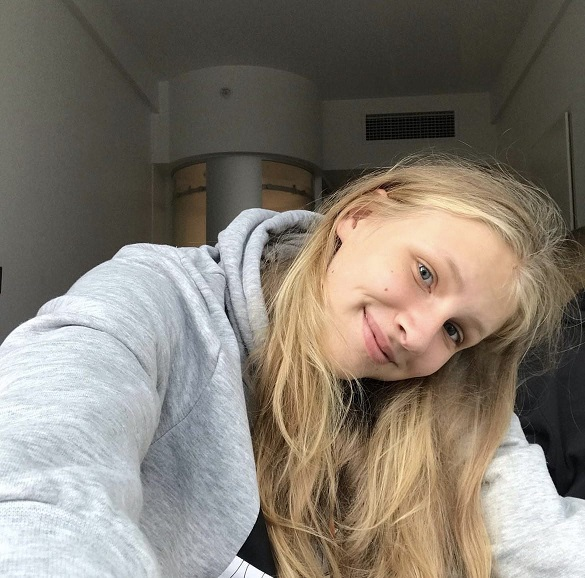

About me
My name is Polina. I am from a Hero City in a beautiful country - Ukraine, from Kyiv. I am majoring in Contemporary Communication at LCC International University in Lithuania.
My love for basketball led me to attend LCC University with the aspiration of becoming the greatest female player of all time, akin to Michael Jordan. Lithuania is known for its high level of basketball.
Through this website, you can discover more about me and what drives me to do what I do.
